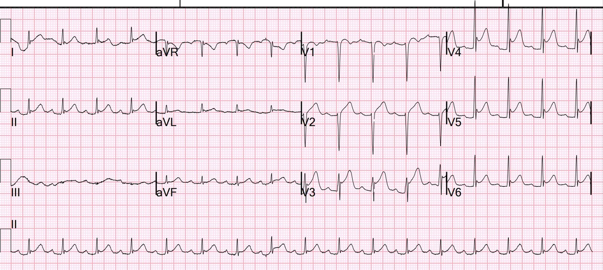
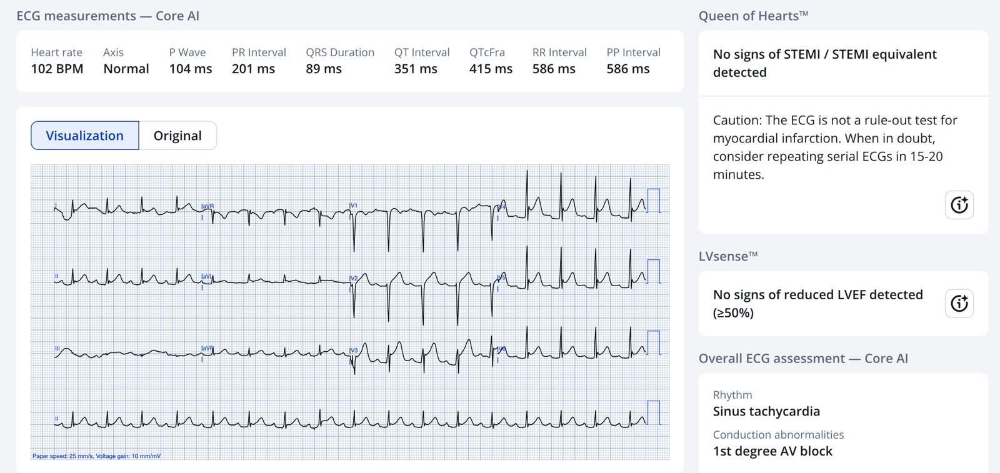
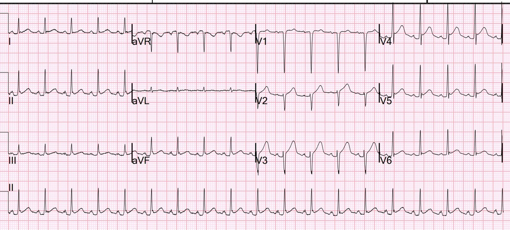
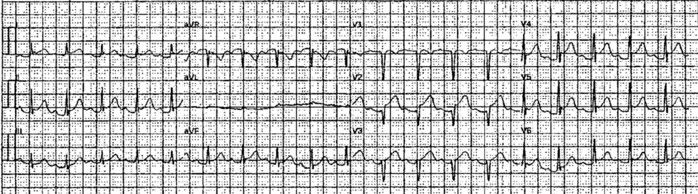
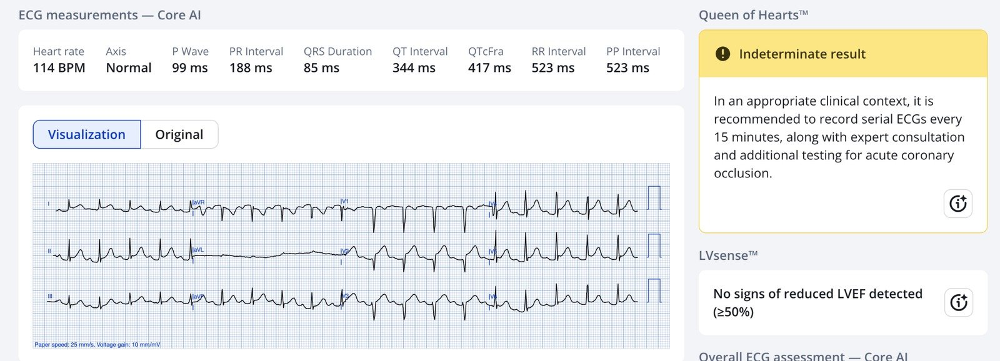
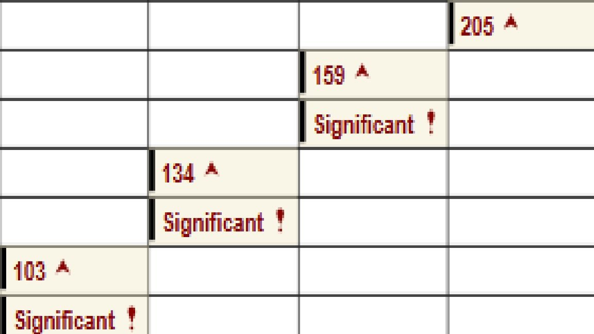
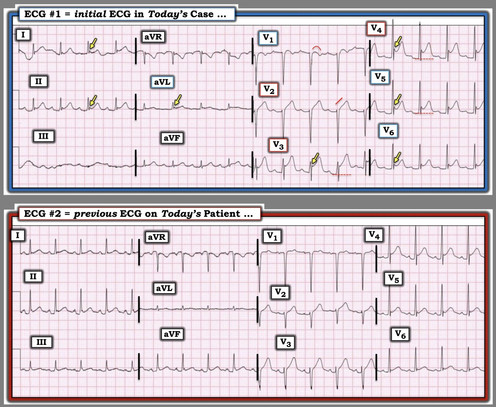

21/03/2026 — Đau ngực cấp và ST chênh lên. Hãy dành chút thời gian xem lại hồ sơ bệnh án!
Bản dịch tiếng Việt của bài "Acute chest pain and ST Elevation. Take a moment to look through the chart!" – Dr. Smith’s ECG Blog. Giữ nguyên toàn bộ 7 hình ảnh của bản gốc.
Một người đàn ông ngoài 40 tuổi đến khám vì đau ngực 10/10 sau khi dùng cocaine. Cơn đau ngực đã kéo dài 1 giờ.
Khi đến khoa cấp cứu (ED), siêu âm tim tại giường cho thấy chức năng tốt.
Đây là điện tâm đồ ban đầu:


Bạn nghĩ gì?
Tôi được xem điện tâm đồ này kèm bối cảnh lâm sàng và tôi đọc điện tâm đồ là ST chênh lên biến thể bình thường (normal variant ST Elevation).
PMCardio Queen of Hearts đồng ý:


Ứng dụng PMcardio for Individuals App 3.0 mới nay đã có mô hình Queen of Hearts mới nhất và khả năng giải thích của AI (bản đồ nhiệt màu xanh lam)! Tải ngay cho iOS hoặc Android. https://www.powerfulmedical.com/pmcardio-individuals/ (Bác sĩ Smith và Bác sĩ Meyers đã huấn luyện mô hình AI và là cổ đông của Powerful Medical). Là thành viên của cộng đồng chúng tôi, bạn có thể dùng mã DRSMITH20 để được giảm 20% độc quyền cho năm đầu tiên của gói thuê bao hằng năm. Tuyên bố miễn trừ: Một số mô-đun AI ECG là thiết bị y tế mang dấu CE theo Quy định Thiết bị Y tế của EU (EU MDR) và chỉ được chứng nhận lưu hành tại Liên minh châu Âu và Vương quốc Anh. Công nghệ PMcardio chưa được Cục Quản lý Thực phẩm và Dược phẩm Hoa Kỳ (FDA) cấp phép sử dụng lâm sàng tại Hoa Kỳ.
Điều then chốt: Xem lại hồ sơ bệnh án cho thấy 3 tháng trước bệnh nhân đã được chụp CT mạch vành với kết quả các động mạch vành hoàn toàn bình thường
Sau đó chúng tôi tìm một điện tâm đồ cũ để so sánh:


Ở đây cũng có ST chênh lên, dù không rõ rệt bằng.
Sau đó, tôi thấy bệnh nhân đến bằng xe cấp cứu, nên tôi tìm điện tâm đồ trước viện và đã tìm thấy:


Smith: điện tâm đồ này đáng lo ngại hơn nhiều so với điện tâm đồ ban đầu ở trên. V2 có vẻ có sóng T tối cấp. Nếu tôi thấy điện tâm đồ này mà không có tiền sử chụp CT mạch vành bình thường, tôi sẽ kích hoạt phòng thông tim (cath lab). Điều này cho thấy việc xem lại hồ sơ bệnh án một chút có thể quan trọng đến mức nào.
Queen nghĩ gì về điện tâm đồ này?


Kết quả thô là 0,36. Kết quả từ 0,30 đến 0,50 là không xác định (indeterminate). Kết quả không xác định có độ đặc hiệu khá cao, vì vậy bạn nên lo ngại khi nhận được kết quả này.
Đã hội chẩn khoa Tim mạch
Siêu âm tim cản âm bằng bọt khí (bubble contrast) chính thức không thấy rối loạn vận động thành:
–Kích thước buồng thất trái bình thường, độ dày thành bình thường và chức năng tâm thu
thất trái bình thường với phân suất tống máu thất trái ước tính 55%.
–Không ghi nhận rối loạn vận động thành thất trái.
Troponin I tăng nhẹ và giảm dần qua nhiều giờ:


Đây là đánh giá của khoa Tim mạch được diễn đạt lại, mà tôi đồng ý:
Bệnh nhân đến khám vì đau ngực sau xương ức không lan, mức 10/10. Cảm giác bó chặt ngực, tăng lên khi ấn. Trước khi nhập viện đã dùng cả cocaine và cần sa. Khai rằng cơn đau không liên quan đến việc sử dụng. Không có gì làm cơn đau đỡ hơn hay nặng hơn. Không nhận thấy thay đổi khi ngồi dậy hay đau tăng khi hít vào. Triệu chứng đã kéo dài trong vài tháng qua. Đau không giảm với nitroglycerin. Thăm dò trước đây với siêu âm tim qua thành ngực (TTE), chụp CT mạch vành bình thường ở lần khám gần đây. Điện tâm đồ có ST chênh lên lan tỏa và đoạn PR chênh xuống.
Nghi ngờ hội chứng vành cấp (ACS) rất thấp dựa trên các dấu hiệu và bệnh cảnh này. Tăng troponin được cho là thứ phát do thiếu máu cục bộ do tăng nhu cầu. Đau ngực phần lớn không thay đổi và liên tục trong vài tháng qua. Troponin giảm dần từ 205 xuống khoảng 130. Tăng troponin nhiều khả năng nhất là thứ phát do mất cân bằng cung-cầu (lactate cải thiện từ 4,3 -> 1 sau truyền dịch), tuy nhiên chưa thể loại trừ viêm màng ngoài tim hay viêm cơ tim. Đau ngực có thể do co thắt mạch vì sử dụng chất kích thích, có thành phần cơ xương/viêm sụn sườn. Không cần chụp mạch vành.
Smith: Tôi nghĩ điện tâm đồ này thể hiện ST chênh lên biến thể bình thường. Các điện tâm đồ sau đó không tiến triển, chứng minh đây là biến thể bình thường (cả thiếu máu cục bộ lẫn viêm màng ngoài tim đều phải tiến triển).
= = =
======================================
BÌNH LUẬN CỦA TÔI, bởi KEN GRAUER, MD (21/3/2026):
Việc phân biệt ST chênh lên do biến thể tái cực với nhồi máu cấp có thể khó khăn. Và khi bệnh nhân vừa dùng cocaine — sự phân biệt này trở nên khó hơn nhiều.
- Tôi tập trung Bình luận của tôi vào 2 điện tâm đồ đầu tiên trong ca hôm nay — mà để cho rõ, tôi đã đặt lại trong Hình 1.
= = =
Điện tâm đồ Ban đầu trong CA BỆNH Hôm nay:
Trình tự tôi xem lại ca hôm nay — là trước tiên chỉ xem điện tâm đồ #1, và chỉ được biết rằng bệnh nhân này đến ED (khoa cấp cứu) vì CP (Chest Pain – đau ngực) mới sau khi sử dụng cocaine. Suy nghĩ của tôi về điện tâm đồ ban đầu trong Hình 1 như sau:
- Nhịp là nhịp nhanh xoang (tần số vừa hơn 100 lần/phút).
- Các khoảng (PR,QRS,QTc) và trục mặt phẳng trán bình thường. Điện thế có vẻ lớn (sóng S sâu ở các chuyển đạo phía trước) — nhưng chưa đạt tiêu chuẩn LVH ở người đàn ông ngoài 40 tuổi này.
- Nhiều chuyển đạo có ST chênh lên (tức là các chuyển đạo I,II,aVL; và từ V2 đến V6) — dù với hình thái lõm hướng lên (dạng “mặt cười”) vốn rất thường gặp ở các biến thể tái cực.
- Ủng hộ một biến thể tái cực là sự vắng mặt của sóng Q — không có ST chênh xuống soi gương — và có khía điểm J ở các chuyển đạo có ST chênh lên (các mũi tên VÀNG).
- Dù đã nói như trên — điều có thể đáng lo ngại là: i) Mức độ ST chênh lên ở một số chuyển đạo rất đáng kể (= 5 mm ở chuyển đạo V3; gần 4 mm ở chuyển đạo V4); — và, ii) Dù 7/8 chuyển đạo có ST chênh lên biểu hiện dạng lõm hướng lên trông lành tính — vẫn có đoạn ST thẳng đuỗn rõ ràng ở chuyển đạo V2, và đoạn ST dạng vòm (coving) hơi bất thường ở chuyển đạo V1.
- NHẬN ĐỊNH CỦA TÔI: Nhìn chung — tôi thấy điện tâm đồ #1 giống nhất với một biến thể tái cực lành tính, dù những e ngại tôi nêu ở gạch đầu dòng trên khiến tôi chưa chắc chắn được 100% về điều này.
= = =
Khi đã tìm được điện tâm đồ trước đây …
Tiếp theo tôi xem điện tâm đồ trước đây được trình bày trong Hình 1.
- Đáng chú ý — Chúng ta không được biết hoàn cảnh ghi điện tâm đồ #2. Và việc chúng ta lại thấy nhịp nhanh xoang (với tần số nhanh hơn một chút ~110 lần/phút) gợi ý rằng điện tâm đồ trước đây này có thể cũng được ghi trong một lần đến ED vì sử dụng cocaine.
- Một lần nữa — điện thế lớn (sóng S = 20 mm ở chuyển đạo V1, phù hợp với tiêu chuẩn điện thế của LVH) — và một lần nữa, có ST chênh lên dạng lõm hướng lên ở nhiều chuyển đạo.
- Dù đã nói như trên — mối lo ngại tiềm tàng của tôi về điện tâm đồ #1 tăng lên khi giờ đây thấy điện tâm đồ trước đây này vì: i) Mức độ ST chênh lên ít hơn đáng kể ở tất cả các chuyển đạo trước tim trên điện tâm đồ trước đây này so với điện tâm đồ #1; — và, ii) Cả đoạn khởi đầu ST thẳng đuỗn ở chuyển đạo V2 lẫn ST dạng vòm ở chuyển đạo V1 đều không thấy trên điện tâm đồ trước đây này!
- ĐIỀU CỐT LÕI: Tôi vẫn chưa tin rằng điện tâm đồ #1 thể hiện một OMI cấp — nhưng ở thời điểm này trong phân tích của mình, tôi cảm thấy cần có các bước sau để loại trừ khả năng này: i) Các điện tâm đồ liên tiếp; ii) Troponin liên tiếp; iii) Siêu âm tim tại giường trong lúc đau ngực (tìm rối loạn vận động thành khu trú); — và, iv) Xem lại cẩn thận hồ sơ bệnh án của bệnh nhân này về các sự kiện trong những lần đến ED và nhập viện trước đây, bao gồm ghi nhận về mọi thăm dò chẩn đoán bổ sung đã được thực hiện.
= = =
Hình 1: 2 điện tâm đồ đầu tiên trong ca hôm nay.


= = =
BẠN có nhận thấy sóng J tăng lên không?
Dù các sóng lệch ở điểm J nổi bật thường đi kèm các biến thể tái cực lành tính — sóng J đôi khi có thể là dấu hiệu của thiếu máu cục bộ cấp (Xem Phần bổ sung cho Bình luận của tôi ở cuối trang trong bài ngày 19 tháng Một năm 2026).
- Tư liệu về sóng J có thể đóng vai trò là một dấu hiệu thiếu máu cục bộ đã được ghi nhận trong y văn (Andreou — Cardiol J 28(4):638-639, 2021 – và – Andreou — Eur Heart J Case Rep 6(7):ytac249, 2022).
- Cơ chế hình thành sóng J do thiếu máu cục bộ được cho là liên quan đến chậm dẫn truyền trong cơ tim thiếu máu và sự khuếch đại khía điện thế hoạt động qua trung gian dòng kali trong giai đoạn tái cực sớm của thất ở thượng tâm mạc nhưng không ở nội tâm mạc.
- Sóng J do thiếu máu cục bộ có thể tăng kích thước nếu thiếu máu cục bộ cấp kéo dài và/hoặc nặng lên. Sóng J có thể giảm kích thước và/hoặc biến mất khi đau ngực và ST chênh lên đi kèm hết đi (như đã thấy trong bài ngày 19 tháng Một năm 2026). Và vị trí của sóng J do thiếu máu cục bộ có thể giúp định vị mạch máu “thủ phạm”.
- Về lâm sàng — Sự xuất hiện sóng J do thiếu máu cục bộ đã được chứng minh là làm tăng nguy cơ rung thất (VFib) (được cho là phản ánh sự gia tăng phân tán xuyên thành của quá trình tái cực thất mà các sóng J này là dấu hiệu).
- Bình luận của tác giả: Tôi đã nghĩ “Cuộc sống dễ dàng hơn” trước khi tôi biết đến sự tồn tại của “sóng J do thiếu máu cục bộ”. Nhìn chung, theo kinh nghiệm của tôi — đây là hiện tượng hiếm gặp, và tôi vẫn tiếp tục coi dấu hiệu khía điểm J và trát đậm phần cuối sóng R là những biểu hiện thường đi kèm với tình trạng mà thường hóa ra là ST chênh lên do biến thể tái cực lành tính.
- NHƯNG — Khi tôi thấy số chuyển đạo có khía điểm J tăng rõ rệt, và kích thước các sóng lệch ở điểm J này tăng lên qua các bản ghi liên tiếp của một bệnh nhân đang được đánh giá vì đau ngực cấp — tôi cân nhắc khả năng sóng J do thiếu máu cục bộ.
- Do đó, làm tăng thêm mối lo ngại tiềm tàng của tôi về các dấu hiệu trên điện tâm đồ #1 — tôi thấy đáng chú ý là số lượng và kích thước các khía điểm J tăng lên rất nhiều khi so sánh điện tâm đồ ban đầu của ca hôm nay với điện tâm đồ trước đây, như trình bày trong Hình 1.
- May mắn thay, như Bác sĩ Smith đã nhấn mạnh ở trên — Xem lại hồ sơ bệnh án của bệnh nhân hôm nay cho thấy một lần chụp CT mạch vành gần đây hoàn toàn bình thường — siêu âm tim tại giường hoàn toàn bình thường, không có rối loạn vận động thành — và các điện tâm đồ liên tiếp không có tiến triển — cho phép kết luận một cách an toàn là nhồi máu cơ tim típ 2 (do mất cân bằng cung-cầu) giải thích cho mức tăng troponin vừa phải, không cần thông tim.
= = =
Về CPAC ( = Đau ngực liên quan đến cocaine):
Tôi thấy 2 tài liệu tham khảo sau đây rất sâu sắc về thực thể Đau ngực liên quan đến cocaine (Havakuk và cs. — JACC Archives 70(1):101-113, 2017 — và — McCord và cs. — Circ 117(14):1897-1907, 2008 ).
- Các biến chứng liên quan đến cocaine chiếm ~500.000 lượt khám cấp cứu mỗi năm tại Hoa Kỳ — trong đó đau ngực là lý do phổ biến nhất đưa những bệnh nhân này đến cấp cứu.
- Dù số lượt khám cấp cứu cao như vậy — chưa đến 6% số bệnh nhân sử dụng cocaine này cuối cùng có nhồi máu cơ tim cấp được xác nhận bằng tăng troponin. Như vậy, phần lớn bệnh nhân chúng ta gặp đến ED vì đau ngực sau khi dùng cocaine sẽ không có nhồi máu cơ tim cấp (và, như thấy trong ca hôm nay — trong số những người có nhồi máu cơ tim, mất cân bằng cung-cầu chứ không phải tắc động mạch vành cấp có thể chiếm một tỷ lệ đáng kể).
- Dù vậy — việc đọc điện tâm đồ ban đầu ở những bệnh nhân này có thể khó khăn, với số lượng đáng ngạc nhiên có ST chênh lên do người dùng cocaine chủ yếu là nam giới trưởng thành trẻ tuổi, và đây lại là nhóm dễ biểu hiện ST chênh lên do biến thể tái cực nhất.
- Nhịp nhanh xoang rất thường gặp khi dùng cocaine cấp — là một yếu tố khác có thể góp phần gây ST chênh lên do thiếu máu cục bộ cơ tim vì tăng nhu cầu (tức là tần số tim nhanh rút ngắn thời gian đổ đầy tâm trương — đồng thời làm tăng nhu cầu oxy).
- Cơ chế gây ra các tác dụng bất lợi lên tim mạch do cocaine rất đa dạng: i) Tăng hoạt tính giao cảm (dẫn đến nhịp nhanh, tăng huyết áp, tăng sức co bóp cơ tim); — ii) Co mạch vành (kích thích alpha-adrenergic; suy giảm sản xuất nitric oxide [chất giãn mạch]; tăng nồng độ endothelin-1); — và, iii) Tác dụng tiền huyết khối (tăng hoạt tính và kết tập tiểu cầu; tăng hoạt tính chất ức chế hoạt hóa plasminogen).
- ĐIỀU CỐT LÕI: Đau ngực sau khi dùng cocaine cấp là nguyên nhân thường gặp của các lượt khám cấp cứu. Dù tuyệt đại đa số những bệnh nhân này sẽ không bị tắc động mạch vành cấp (tức là nhiều người có mất cân bằng cung-cầu hoặc nguyên nhân ngoài tim gây đau ngực) — cocaine nổi tiếng với các tác dụng bất lợi lên tim mạch theo nhiều phương diện, bao gồm cơ địa dễ huyết khối mà đôi khi có thể dẫn đến OMI cấp. Do đó — cần có cách tiếp cận thận trọng cho đến khi có thể loại trừ chắc chắn một biến cố tim cấp (điều may mắn đã làm được trong ca hôm nay!).
= = =
= = =